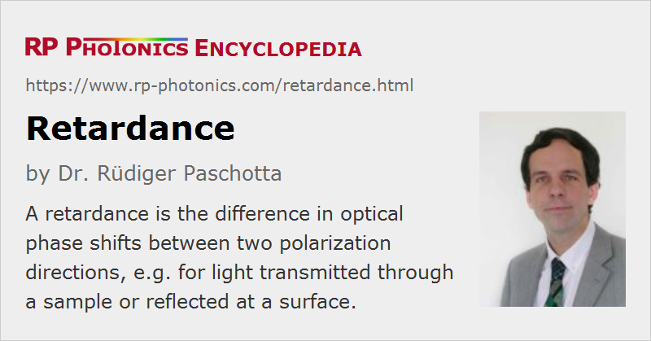

Retardance
Definition: the difference in optical phase shifts between two polarization directions, e.g. for light transmitted through a sample or reflected at a surface
German: Verzögerung
How to cite the article; suggest additional literature
Author: Dr. Rüdiger Paschotta
When a light beam propagates through a birefringent medium, it experiences different changes of optical phase for the ordinary and extraordinary polarization components. The difference in those phase shifts is called retardance. It can be specified in radians (rad) or in degrees (°), alternatively in terms of wavelengths; a retardance of λ, for example, corresponds to 2 π or 360°.
In optics, a retardance is often introduced by inserting a waveplate – for example, a π retardance with a λ/2 plate. With a Babinet–Soleil compensator or a Berek compensator, one can obtain an adjustable amount of retardance. Generally, optical elements for introducing a controlled amount of optical retardance are called retarders.
Retardation effects also occur upon reflection at a dielectric interface with non-normal incidence; here, the retardance can be calculated with Fresnel equations.
More complicated effects occur as a result of thermally induced birefringence, for example in a laser crystal, where both the amount of retardance and the axes directions generally depend on the position within the beam profile.
Note also that the retardance is generally wavelength-dependent. For achromatic waveplates, the wavelength dependence is minimized.
Questions and Comments from Users
Here you can submit questions and comments. As far as they get accepted by the author, they will appear above this paragraph together with the author’s answer. The author will decide on acceptance based on certain criteria. Essentially, the issue must be of sufficiently broad interest.
Please do not enter personal data here; we would otherwise delete it soon. (See also our privacy declaration.) If you wish to receive personal feedback or consultancy from the author, please contact him e.g. via e-mail.
By submitting the information, you give your consent to the potential publication of your inputs on our website according to our rules. (If you later retract your consent, we will delete those inputs.) As your inputs are first reviewed by the author, they may be published with some delay.
See also: waveplates
and other articles in the category general optics
|  |
If you like this page, please share the link with your friends and colleagues, e.g. via social media:
These sharing buttons are implemented in a privacy-friendly way!